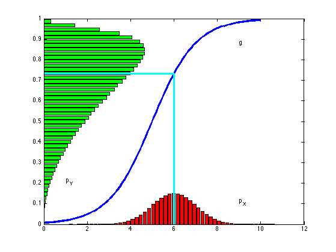

function bayesChangeOfVar()
xseq = [0:0.1:10];
function y = ginv(x)
y = 1 ./ (1 + exp(-x + 5));
end
mu = 6; sigma = 1;
N = 10^6;
x = normrnd(mu,sigma,N,1);
[xheight,xpoints] = hist(x,50);
[ypoints,yheight] = hist(ginv(x),50);
bar(xpoints,xheight*2/N,'r');
hold on;
plot(xseq,ginv(xseq),'b','linewidth',3);
barh(yheight,ypoints*100/N,'g');
line([mu,mu],[0,ginv(mu)],'color','c','linewidth',3);
line([0,mu],[ginv(mu),ginv(mu)],'color','c','linewidth',3);
text(9,1/10,'p_X');
text(1,2/10,'p_Y');
text(9,ginv(9) - 1/10,'g');
hold off;
printPmtkFigure('bayesChangeOfVar')
end
